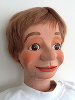

Jack Coats figure for sale
2/23/2012
Hopefully this won't offend my figuremaker friends, but I've always said if I had to pick a personal favorite figure maker, it would be Jack Coats.
Jack was one of the first figuremakers I met in person and we talked frequently by phone over a period of several years up until his untimely passing in 1973. In talking with Mark Wade earlier this week, Mark mentioned he was going to sell his Jack Coats figure, so I asked him to send me these pictures to post, giving blog readers an advance heads up, should there be a reader looking to purchase one of the rare Jack Coats carved figures.
This figure was made in 1972. Mark used this figure called "Rudy" in the late 70's /early 80's, and also used him in the DVD "Successful Ventriloquism" for Maher Studios. He was called "Jack" (after
his creator) in the film. He has the original paint job on both head and
hands and has moving eyes and a hand shaker.
For more information, contact Mark directly: markwade@kidshowvent.com
{kind=link}
Jack was one of the first figuremakers I met in person and we talked frequently by phone over a period of several years up until his untimely passing in 1973. In talking with Mark Wade earlier this week, Mark mentioned he was going to sell his Jack Coats figure, so I asked him to send me these pictures to post, giving blog readers an advance heads up, should there be a reader looking to purchase one of the rare Jack Coats carved figures.
{kind=link}

This figure was made in 1972. Mark used this figure called "Rudy" in the late 70's /early 80's, and also used him in the DVD "Successful Ventriloquism" for Maher Studios. He was called "Jack" (after
his creator) in the film. He has the original paint job on both head and
hands and has moving eyes and a hand shaker.
For more information, contact Mark directly: markwade@kidshowvent.com